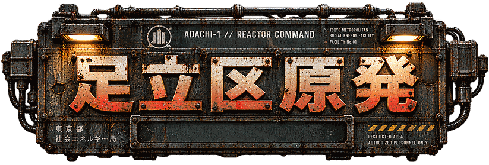

炉心制御卓は横画面でのみ操作可能です。端末を横向きにしてください。
200X年、午前3時17分。足立区竹ノ塚地下実験炉「ADACHI-1」は制御不能となった。
事故発生から12分後、区内全域に避難命令。19分後、通信途絶。26分後、消防無線には、虫の羽音のようなノイズだけが残された。
以後、足立区は地図上から削除された。
あなたは最後に投入された修復技師。封鎖区域から資材を回収し、武器を生産しながら、6つの基幹システムを再起動せよ。現地生体情報は、まだ分類されていない。
炉心温度は現在も上昇中。人間でいられる時間は、保証されない。
